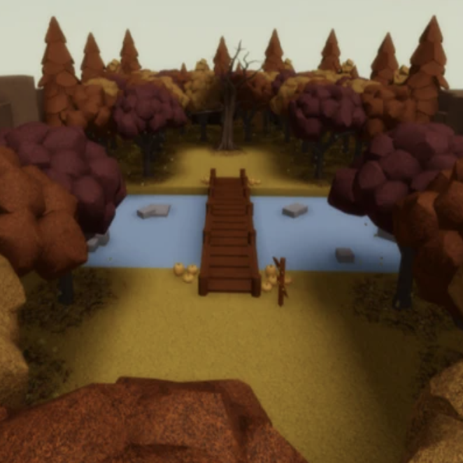

Although [Roblox](https://www.roblox.com/), an online game platform and game creation system, didn't introduce me to coding, it is what first allowed me to apply programming concepts to my personal endeavors. I began making showcases in middle school as a hobby, designing all the little worlds that popped into my head, and now my creations range from cozy cottages to natural landscapes to places lost in time. Nostalgia is my biggest inspiration.

As the solo developer of these showcases, I have the freedom to craft immersive, 3D environments that reflect my artistic visions by designing models, orchestrating lighting and sound, and shaping the atmosphere to evoke sentimental ambiences. Users are to engage with my builds through visual storytelling, with paths and layouts that attract them to areas of interest while promoting a natural flow of exploration. One showcase in particular, _Gloomy Sunday_, centered around an urban legend, has accumulated over 1.4k visits and 60 favorites.

My showcases have definitely improved over the years. ....
